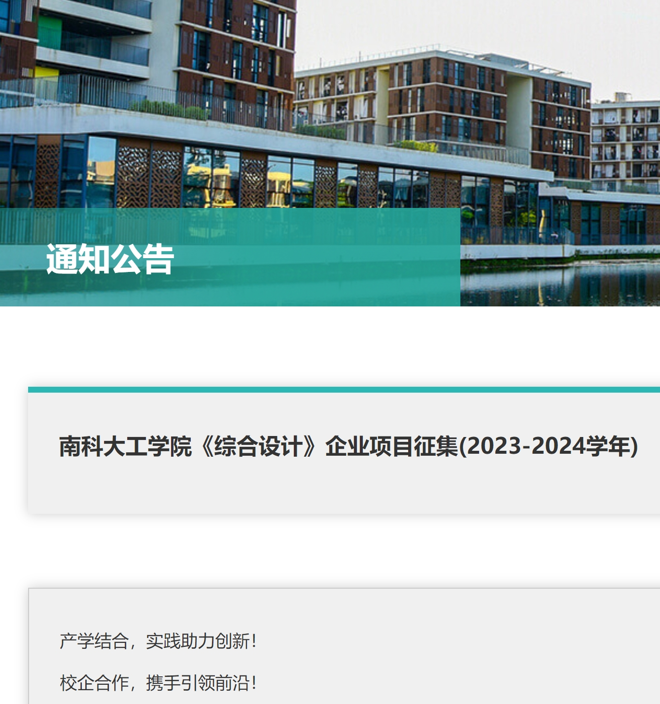
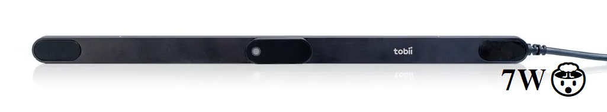

Explore the inner comminication features.

This project aims to research and improve the application of eye-tracking technology to develop materials and systems with practical application prospects. The specific research includes:
- Eye Movement Data Analysis: Utilizing hardware devices such as Tobii Eye Tracker 5 and Tobii Pro Spark to collect eye movement data from users in different scenarios, analyzing users' attention distribution and information processing methods in depth.
- Expansion of Application Scenarios: Exploring the application of eye-tracking technology in personalized learning, game experience analysis, and human-computer interaction, particularly focusing on how eye movement behaviors can drive voice interactions and improve user experiences.
- Medical Detection: Investigating how changes in eye movement behavior can monitor the progression of psychological disorders (such as early-stage depression) and developing eye-tracking-assisted medical detection systems.
- Collaboration and Resource Support: Seeking project collaboration with companies and funding support to facilitate technology transfer and practical application, promoting the popularization and development of eye-tracking technology.